Witam, cesja leasingu TYLKO DLA FIRM VolkswagenPassat B8 2.0 tsi 272 km DNUA, 4Motion, DSG7 Dq381.
Salon Polska, bezwypadkowy, nie malowany, serwisowany w ASO. VW po liftingu w wersji Elegance.
Auto na gwarancji do 12.2027
Oferta tylko dla firm
Kwoty bez VAT
Odstępne 21000 zl
Do spłaty pozostało:
39 rat w kwocie 1285 zl
Wykup w w kwocie 14600 zł
Finansujący to Volkswagen Bank.
Ubezpieczenie GAP jest wykupione na cały okres leasingu, ujęte jest w kwocie raty.
Możliwy wykup samochodu w grudniu 2027r. Czyli po 24mc. wtedy auto będzie tańsze o koszt pozostałych odsetek 8-10 tysięcy zł.
Samochód sprzedajemy bo jest praktycznie nie użytkowany w firmie.
Do auta otrzymaliśmy „certyfikat jakości” który widnieje na zdjęciu, oraz dostaliśmy gwarancję na rok z opcją przedłużenia za dodatkową opłatą. Passat obecnie jest na oponach letnich, dorzucamy opony zimowe w cenie.
Po zakupie został wykonany serwis (lista części na zdjęciu), oraz auto było na akcji serwisowej w salonie VW.
Ze swojej strony zleciliśmy wykonanie programu skrzyni biegów DSG (nie gotowiec, Passat był strojony w warunkach drogowych) co znacznie poprawiło komfort jazdy i przedłuży żywotność całego zespołu napędowego. Fv do wglądu, zostały wgrane dwie mapy skrzyni które zostały przyporządkowane do trybów jazdy.
Proszę o wiadomość SMS jeżeli nie odbiorę, oddzwonię.
Poniżej lista bardzo bogatego wyposażenia.
Pakiety wyposażenia:
Czujniki parkowania - przód/tył (Czujniki parkowania - przód, Czujniki parkowania - tył)
Fotele przednie podgrzewane (Fotel kierowcy podgrzewany, Fotel pasażera podgrzewany)
Fotele przednie z regulacją wysokości (Fotel kierowcy z regulacją wysokości, Fotel pasażera z regulacją wysokości)
Kierownica multifunkcyjna (Dźwignia zmiany biegów pokryta skórą, Kierownica pokryta skórą, Sterowanie komputerem pokładowym przy kierownicy, Sterowanie radiem w kierownicy)
Pakiet Innowacyjny (Instalacja telefoniczna Comfort z funkcją ładowania indukcyjnego, Pakiet Travel Assist High, Reflektory LED Matrix IQ.LIGHT, Szyba przednia odbijająca promienie słoneczne, Szyba przednia ogrzewana, Wyświetlacz Active Info Display)
Pakiet Lusterka (Lusterka zewnętrzne elektrycznie składane, po stronie kierowcy aut. przyciemniane i aut. opuszczane po stronie pasażera, Oświetlenie przestrzeni podczas wsiadania i wysiadania z samochodu)
Pakiet Premium (Autoalarm z zabezpieczeniem wnętrza i blokadą odholowania, Pokrywa bagażnika otwierana elektrycznie, System "We Connect Plus" dla systemów nawigacyjnych, System bezkluczykowego dostępu i uruchamiania pojazdu, System nawigacji satelitarnej "Discover Media")
Pakiet Travel assist
System ochrony pasażerów Pre-Crash Front & Side oraz Side Assist (System ochrony pasażerów Pre-Crash Front & Side, System Side Assist)
Szyba tylna oraz boczne tylne przyciemniane, szyby boczne dźwiękoszczelne (Szyby boczne dźwiękoszczelne, Szyby tylne dodatkowo przyciemniane)
Tempomat aktywny z systemem ACC i Front Assist (System ACC - automatyczna regulacja odległości, System Front Assist)
Wyposażenie dodatkowe:
Instalacja telefoniczna Comfort z funkcją ładowania indukcyjnego, Koło zapasowe dojazdowe, Lakier metalizowany niebieski, System, System kontroli ciśnienia w oponach, System wspomagający parkowanie Park Assist, Światła mijania i drogowe automatycznie przełączane, Tarcze kół aluminiowe 18, Wyświetlacz Active Info Display, Zawieszenie aktywne DCC
Wyposażenie standardowe:
ABS - system zapobiegający blokowaniu kół
Dysze spryskiwaczy podgrzewane
Dywaniki
Fotel kierowcy z regulacją odcinka lędźwiowego elektryczną
Fotele przednie komfortowe
Gniazdo 12V
Gniazdo 12V w bagażniku
Hamulec postojowy automatyczny
Hamulec wielokolizyjny
Immobilizer
Kierownica pokryta skórą
Kierunkowskazy LED
Kieszenie w oparciach foteli przednich
Klimatyzacja automatyczna Climatronic 3 strefowa
Kolumna kierownicy z regulacją wysokości i głębokości
Komputer pokładowy Premium z kolorowym wyświetlaczem
Kurtyny powietrzne boczne
Lusterka zewnętrzne podgrzewane elektrycznie
Lusterka zewnętrzne regulowane elektrycznie
Lusterka zewnętrzne w kolorze nadwozia
Lusterko wewnętrzne ściemniane automatycznie
Lusterko zewnętrzne kierowcy ściemniane automatycznie
Oświetlenie Ambiente
Otwór na długie przedmioty w siedzeniu tylnym
Pakiet Travel assist
Podłokietnik centralny przedni
Podłokietnik siedzeń tylnych
Poduszka powietrzna kierowcy
Poduszka powietrzna kolanowa kierowcy
Poduszka powietrzna pasażera z możliwością odłączenia
Poduszki powietrzne boczne przednie
Pokrywa bagażnika otwierana elektrycznie
Reflektory LED
Relingi dachowe w kolorze srebrnym
Schowek chłodzony
Schowek dodatkowy w konsoli centralnej
System bezkluczykowego uruchamiania pojazdu Keyless Go
System elektronicznej kontroli toru jazdy ESP
System ochrony pasażerów aktywny "PreCrash"
System ostrzegania o zmęczeniu kierowcy
System p/poślizgowy MSR
System p/poślizgowy przy przyspieszaniu ASR
System rekuperacji - odzyskiwania energii podczas hamowania
System stabilizacji toru jazdy przyczepy TSA
System Start/Stop
System sygnalizacji spadku ciśnienia w oponach
System wyboru profilu jazdy
Szyby atermiczne
Szyby przednie regulowane elektrycznie
Szyby tylne regulowane elektrycznie
Światła do jazdy dziennej
Światła tylne LED
Tapicerka siedzeń - środkowa część foteli Alcantara, boczne części siedzeń oraz górny fragment podłokietnika skóra Vienn
Koła aluminiowe 18"
Wspomaganie układu kierowniczego zmienne
Wycieraczki z czujnikiem deszczu
Zamek centralny zdalnie sterowany
Zderzaki w kolorze nadwozia.
Ogłoszenie ma charakter informacyjny i stanowi zaproszenie do zawarcia umowy (art. 71 Kodeksu cywilnego); nie stanowi natomiast oferty handlowej w rozumieniu art. 66 § 1 Kodeksu cywilnego. W celu sprawdzenia zgodności oferty oraz uzyskania wszelkich informacji prosimy kontaktować się pod numerem telefonu.
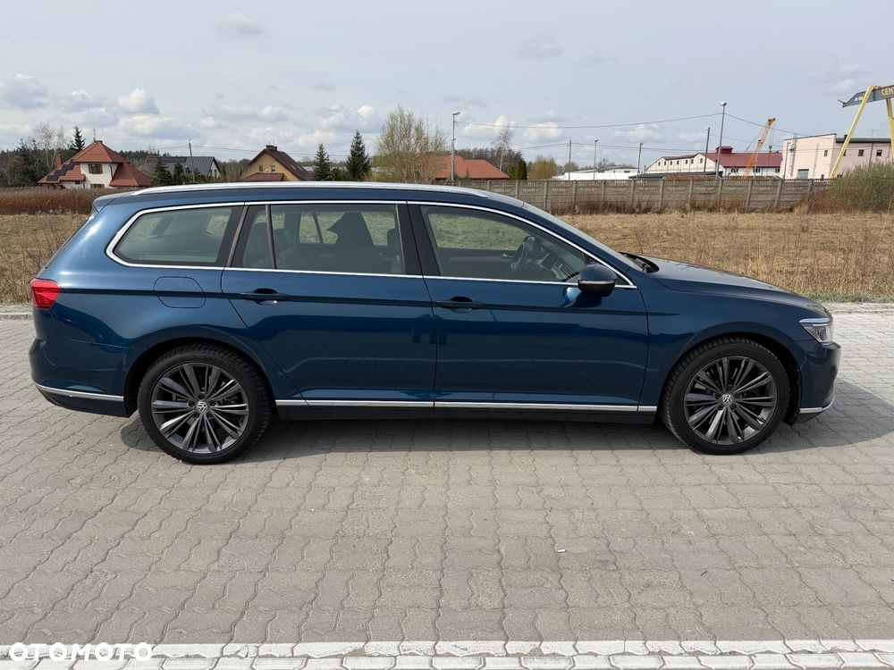
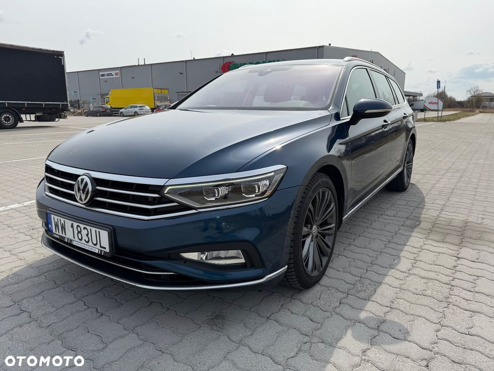

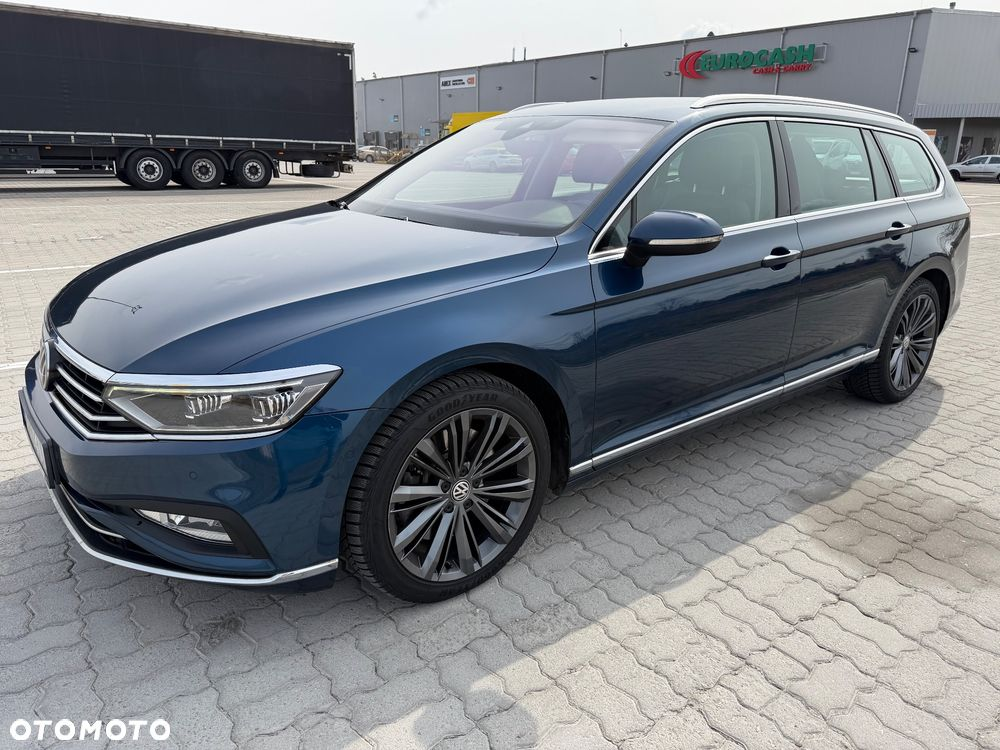
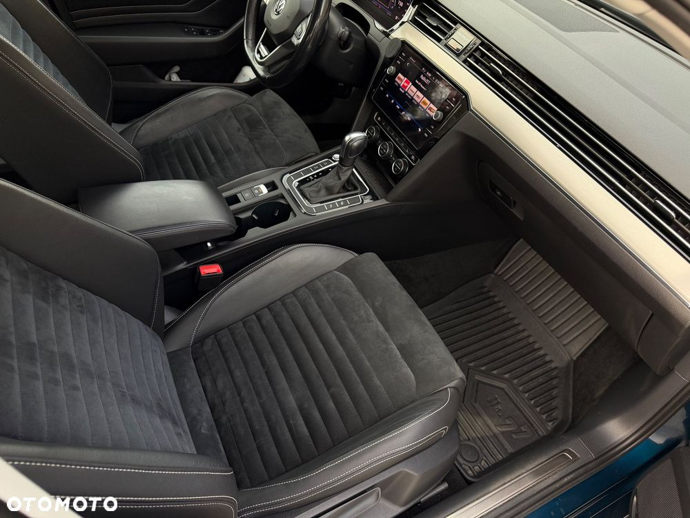
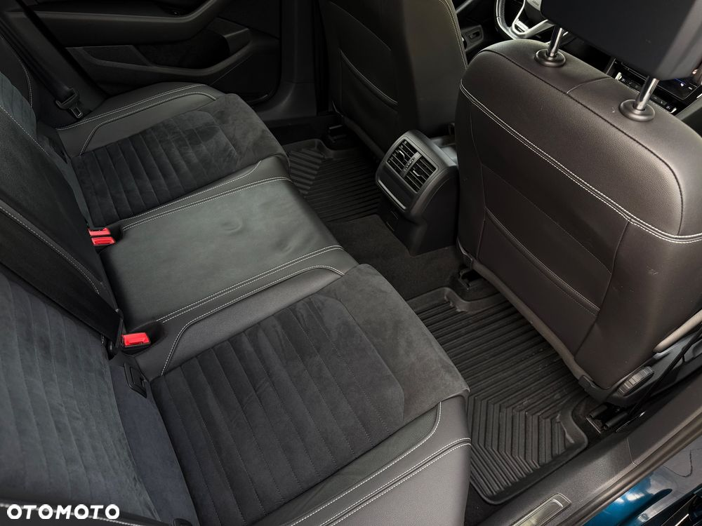

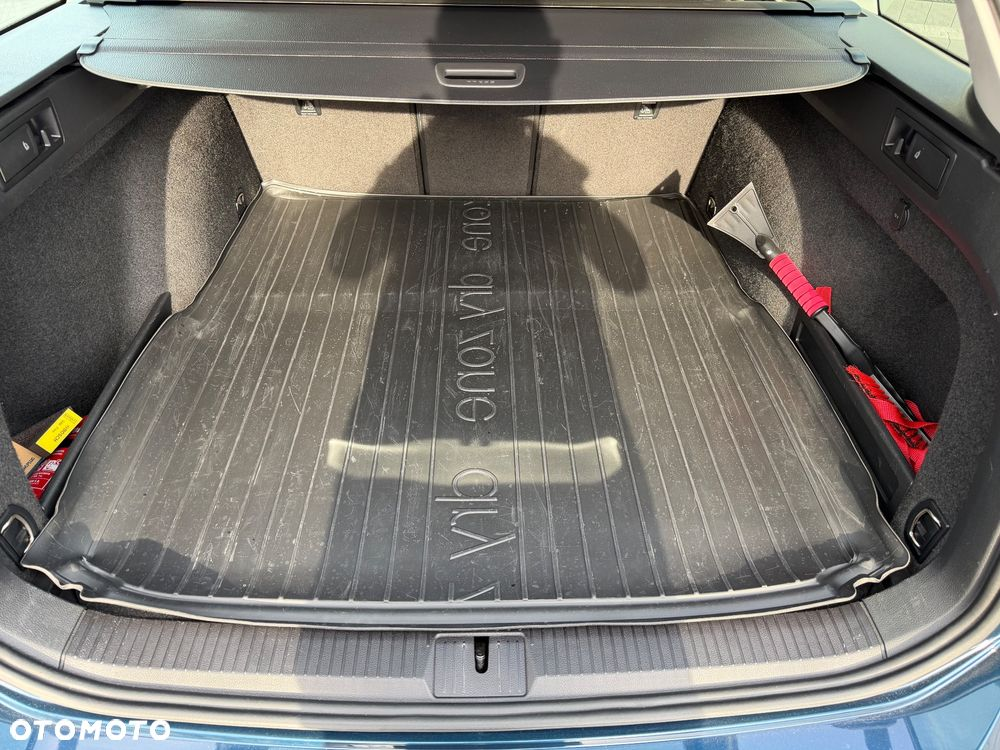
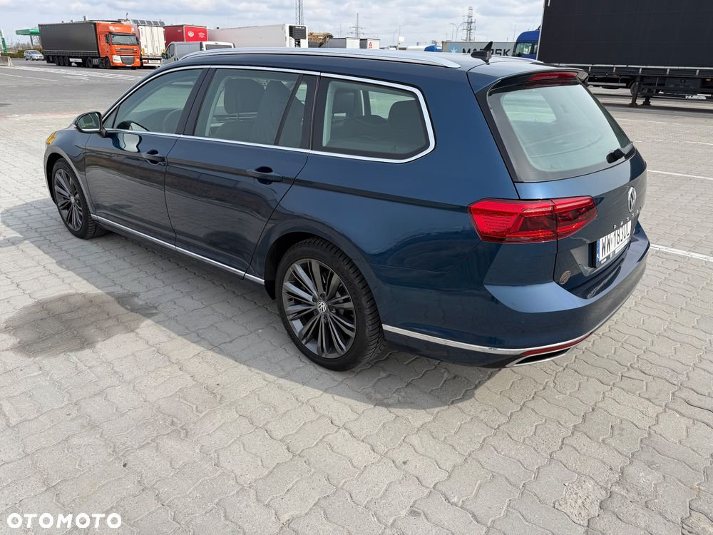


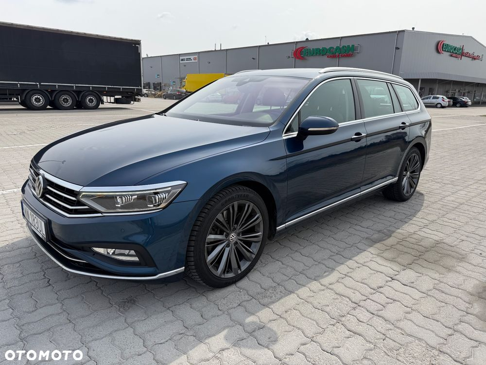
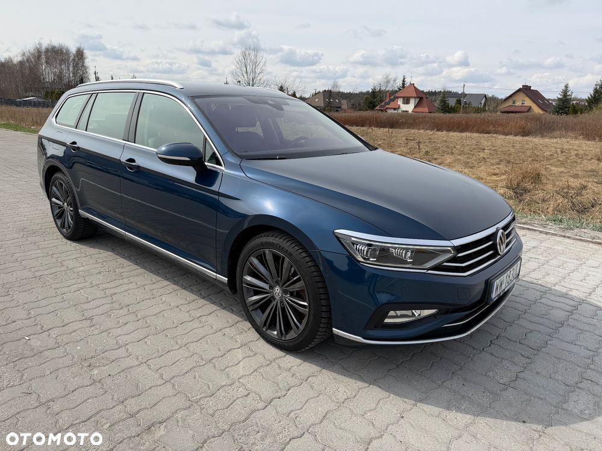
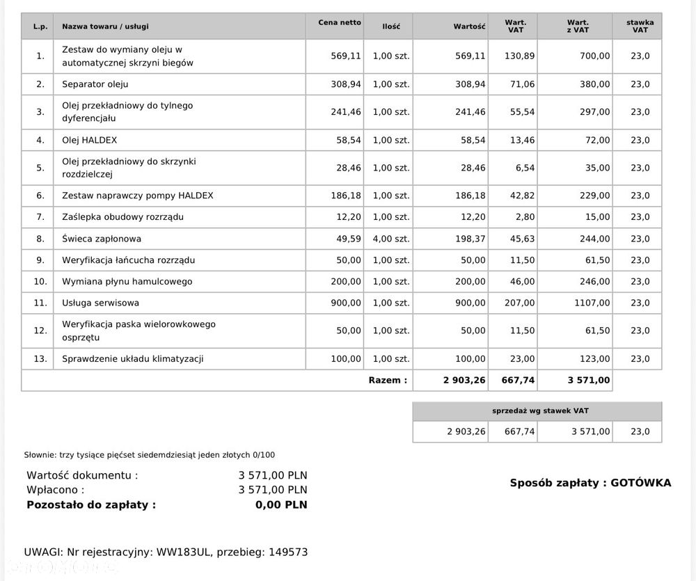
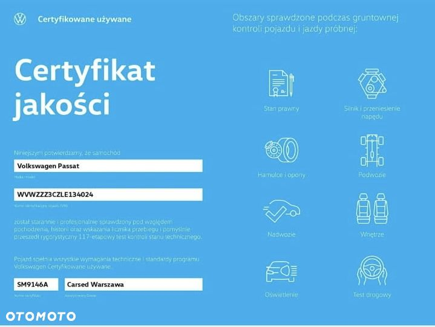